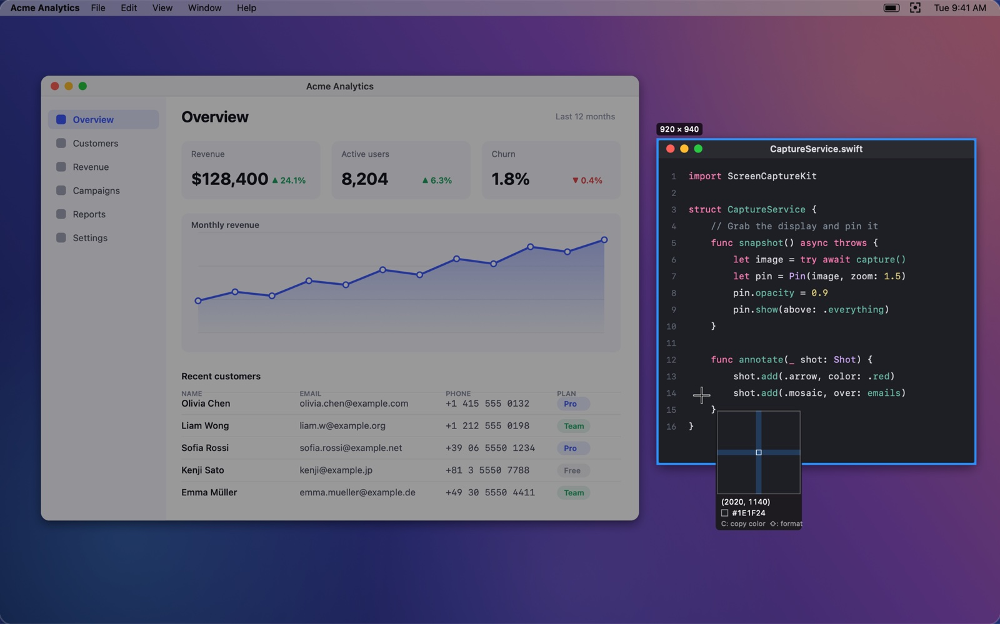

Capture
Hover to snap to a window, or drag to select any area. It works across multiple displays.
- A pixel magnifier for edges accurate to 1 pixel
- Press C to copy the color under the pointer
- Return copies to the clipboard, ⌘S saves a file
⌥⌘Astarts a capture